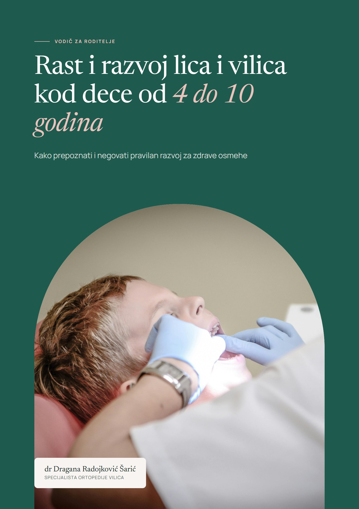
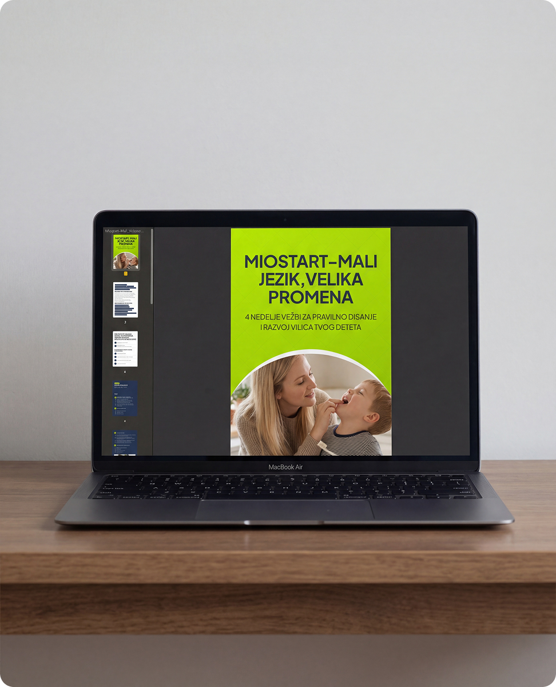

01
Ispravljanje zagrižaja
Fiksne i mobilne proteze, individualno planiranje terapije i redovne kontrole.
Saznajte višeFiksne i Invisalign proteze
Plan terapije za osmeh u koji veruješ
Dr Dragana Radojković Šarić pruža specijalističke tretmane za ispravljanje zagrižaja, Invisalign terapiju i tegobe viličnog zgloba.
Usluge ordinacije · Beograd
Upoznajte se sa glavnim uslugama ordinacije i saznajte više o mogućnostima lečenja.
01
Fiksne i mobilne proteze, individualno planiranje terapije i redovne kontrole.
Saznajte više02
Ortodontska terapija providnim, uklonjivim folijama uz digitalno planiranje.
Saznajte više03
Procena tegoba poput bola, kliktanja i ograničene pokretljivosti vilice.
Saznajte višeZa roditelje
Neke svakodnevne pojave lako je prevideti. Kada znate na šta da obratite pažnju, lakše ćete proceniti kada je vreme za razgovor sa stručnjakom.
Disanje na usta
Disanje kroz nos je prirodan obrazac disanja. Kada dete često i dugo diše na usta, to može biti povezano sa položajem jezika i razvojem vilica, pa vredi o tome razgovarati sa stručnjakom.
Pročitajte višeOralne navike
Sisanje prsta, duža upotreba cucle ili guranje jezika pri gutanju česti su u detinjstvu. Kada takve navike traju duže, mogu uticati na položaj zuba i zagrižaj, zato ih je korisno pratiti.
Pogledajte temeRani gubitak mlečnog zuba
Mlečni zubi čuvaju prostor za stalne zube koji rastu ispod njih. Kada se zub izgubi ranije nego što se očekuje, procena pomaže da se vidi da li tom prostoru treba posvetiti pažnju.
Pogledajte temeRazvoj vilica i položaj zuba
Uredan izgled zuba ne govori uvek sve o odnosu vilica i zagrižaju. Neke pojave lakše uoči stručnjak tokom pregleda nego roditelj kod kuće.
Pogledajte temeOvi znaci sami po sebi ne znače da dete ima problem i ne predstavljaju dijagnozu. Oni su razlog da pratite razvoj i, ako imate nedoumicu, potražite stručnu procenu.
Interaktivni prikaz
Okrenite model pokazivačem i uključite ili isključite slojeve da biste istražili pojednostavljen prikaz.
Prikazani su svi slojevi modela.
Pojednostavljena edukativna ilustracija. Ne prikazuje individualnu anatomiju i nije dijagnostički alat.
Šira slika
Ortodontska procena ne posmatra samo da li su zubi poravnati. Sagledava se i kako se vilice razvijaju, kako se zubi sklapaju i koje svakodnevne funkcije mogu biti deo šire slike.
Svako dete se razvija svojim tempom. Zato nema univerzalnih odgovora, već procene prilagođene konkretnom detetu.

Besplatan vodič za roditelje
Vodič „Rast i razvoj lica i vilica kod dece od 4 do 10 godina” napisan je jednostavno, bez stručnih termina, sa jasnim primerima. U njemu ćete saznati:
Proverite svoju e-poštu za nekoliko minuta. Ako poruku ne vidite, pogledajte i folder „Promocije” ili „Neželjena pošta”.
Dok čekate, pročitajte nešto o razvoju detetaO doktorki
Dr Dragana Radojković Šarić je stomatolog, specijalista ortopedije vilica i mama troje dece. Više od 15 godina dijagnostikuje i leči ortodontske probleme kod dece i odraslih.
Iskustvo ju je dovelo do šire slike: kako na vreme prepoznati ono što utiče na razvoj i kako postići stabilan rezultat nakon terapije. Svakom pacijentu pristupa individualno i neprestano se usavršava.
„Ulaganje u znanje i veštinu je proces koji nema i ne sme imati kraj.”dr Dragana Radojković ŠarićUpoznajte dr Draganu
Sledeći korak · Program
Program vežbi za disanje i razvoj vilice, namenjen roditeljima čija deca dišu na usta ili imaju poteškoće sa govorom, vilicom ili pažnjom. Kratke vežbe kroz igru, koje radite sa detetom kod kuće.
Program je edukativni materijal za rad kod kuće. Ne zamenjuje pregled niti individualno planiranu terapiju.

Edukativni prikaz · Položaj jezika
Edukacija
Šta je uobičajeno, šta može biti znak za proveru i kome se obratiti.
Prst, cucla i način gutanja: šta je deo detinjstva, a šta vredi pratiti.
Zašto mlečni zubi čuvaju prostor za stalne i kada je procena korisna.
Usluge ordinacije
Od ispravljanja zagrižaja i Invisalign tretmana do terapije viličnog zgloba — upoznajte se sa uslugama i zakažite konsultaciju.
Prva konsultacija je besplatna.
Strahinjića bana 35, Beograd · pon–pet 9–19h